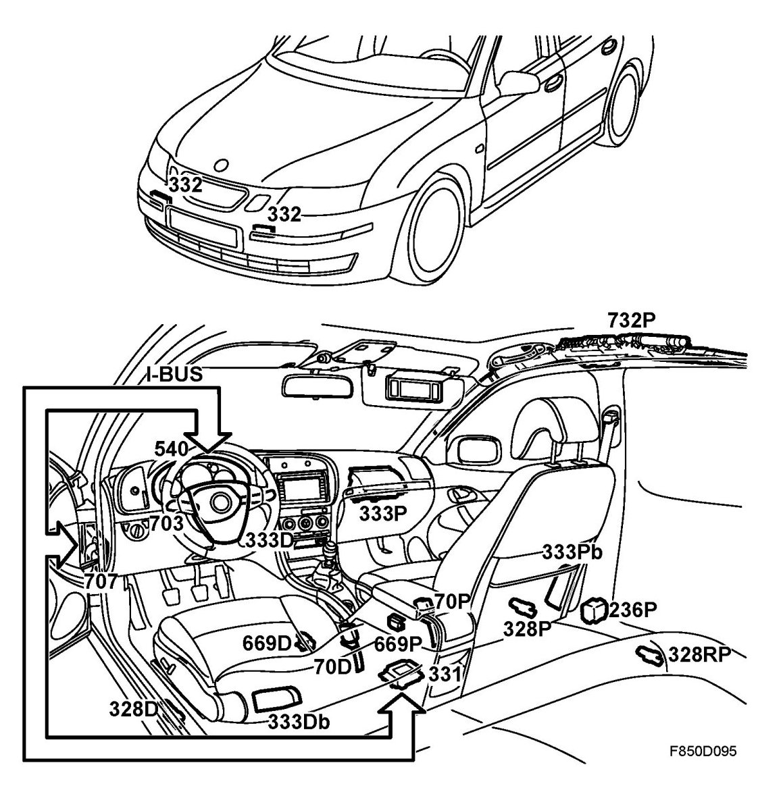
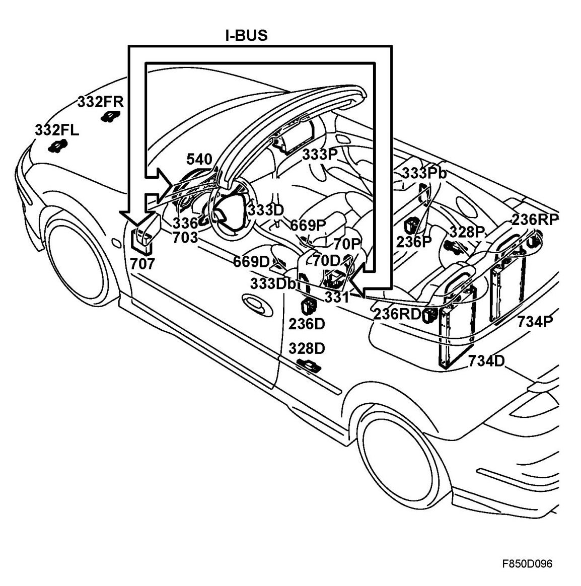

Brief Description
Brief Description
Overview, 4D, 5D

- ACM on the exhaust tunnel between the front seats (331)
- Side impact sensor (328D, 328P, 328RD, 328RP)
Front impact sensor on the bumper rail under the radiator fairing (332FL/332FR)
- Seat position sensor in the seat rail (669D, 669P)
- Dual-stage driver airbag in the steering wheel (333D)
- Dual-stage passenger airbag in the dashboard (333P)
- Side airbag in the front seat (333Db, 333Pb)
- Belt pretensioner (236D, 236P)
- Inflatable curtain, under the headlining, (732D, 732P)
- Contact roller, in steering wheel (336) (column integration module CIM (703))
- Seat-belt buckle (70D, 70P)
- MIU (540)
- SID (541)
- BCM (707)
Overview, CV

- ACM on the exhaust tunnel between the front seats (331)
- Side impact sensor (328D, 328P)
- Front impact sensor on the bumper rail under the radiator fairing, blue (332FL/332FR)
- Seat position sensor in the seat rail (669D, 669P)
- Dual-stage driver airbag in the steering wheel (333D)
- Dual-stage passenger airbag in the dashboard (333P)
- Side airbag in the front seat (333Db, 333Pb)
- Belt tensioner (236D, 236P, 236RD, 236RP)
- Activation unit, roll bar, driver/passenger side (734D/P)
- Contact roller, in steering wheel (336) (column integration module CIM (703))
- Seat-belt buckle (70D, 70P)
- MIU (540)/SID (541)
- BCM (707)
Description, 4D, 5D
The airbag system, together with the seat-belts, anti-submarining protection, steering column assembly and SAHR (Saab Active Head Restraint), is a complete system which minimises driver and passenger injury in the event of a collision.
Equipment
The car is equipped with dual-stage driver and passenger airbags and side airbags in the front seats. There are also belt tensioners for the driver and passenger positions as well as an inflatable curtain on either side.
Location
The driver airbag is located in the steering wheel and the passenger airbag is located in the dashboard above the glovebox. The side airbags are placed inside the backrest upholstery fabric on the outer edges of the front seats. The belt tensioners are located in the door sills by the B-pillars. The inflatable curtain is located between the A and C-pillar under the headlining on the LH and RH sides.
Checking and activation
The entire system is controlled by an airbag control module (ACM) located on the exhaust tunnel between the front seats. Using external sensors and integrated acceleration sensors, the control module senses when a collision occurs. The control module applies voltage to the electric detonators in those airbags and belt tensioners which can minimise driver and passenger injury. The electric detonators activate gas generators that inflate the airbags.
Driver and front passenger seatbelts are equipped with explosive belt tensioners which pull the seatbelts taut should a collision occur.
In order to prevent the driver from sliding under the dashboard during a collision, a knee shield is located under the dashboard on the driver's side.
The glove box acts as a knee shield for the front seat passenger.
If a side impact occurs, an inflatable curtain is deployed in order to protect the heads of the front and rear seat passengers. A side airbag is also activated for the driver or front seat passenger on the side of the impact.
When the ACM control module has deployed an airbag/airbags, the bus message "Airbag activated ON" is sent by the ACM. The BCM uses this to activate the interior lighting, to send a bus message to activate dipped beam, to activate the hazard flashers and to unlock all doors.
Description, CV
The airbag system, together with the seat-belts, anti-submarining protection, steering column assembly and SAHR (Saab Active Head Restraint), is a complete system which minimises driver and passenger injury in the event of a collision.
Equipment
The car is fitted with a two-stage driver airbag, two-stage passenger airbag, side airbags in the front seats. Belt tensioners for driver and passengers and for the outer seats in the rear, and roll bars for rollover protection.
Location
The driver airbag is located in the steering wheel and the passenger airbag is located in the dashboard above the glovebox. The side airbags are placed inside the backrest upholstery fabric on the outer edges of the front seats. The front belt pretensioners are placed in the sills by the Bpillars. The rear belt pretensioners are mounted in the torsion box behind the backrests of the outer rear seats. The roll bars are located behind the rear seat backrest.
Checking and activation
The entire system is controlled by an airbag control module (ACM) located on the exhaust tunnel between the front seats. Using external sensors and integrated acceleration sensors, the control module senses when a collision occurs. The control module applies voltage to the electric detonators in those airbags and belt tensioners which can minimise driver and passenger injury. The electric detonators activate gas generators that inflate the airbags. The control module also has a sensor to detect angle changes for rollover protection. If the rollover protection is required, it is activated via a pyrotechnic activation unit which releases a lock for the roll bar. The roll bars are extended by pretensioned springs.
The seat belts for the driver's side, the passenger side and the outer rear seat positions are equipped with explosive seat belt tensioners which pull the seat belts taut in the event of a collision.
In order to prevent the driver from sliding under the dashboard during a collision, a knee shield is located under the dashboard on the driver's side.
The glove box acts as a knee shield for the front seat passenger.
On a side impact, the side airbags are activated for the side involved in the collision, and the two roll bars. The side airbags protect the head and upper body.
When the ACM control module has deployed an airbag, the bus message "Airbag activated ON" is sent by the ACM. The BCM uses this to activate the interior lighting, to send a bus message to activate dipped beam, to activate the hazard flashers and to unlock all doors.